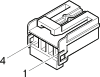

D22 Additional heater junction ( ABS )
- Path
- Electrical equipment > Connectors > D Intermediate couplings > D22 Additional heater junction > D22 Additional heater junction ( ABS )
- Kind
- connector pinout (pin -> wire colour -> other end)
- Applies to
- engines: 3.2 V6, 1.9 JTD 8v , 2.4 JTD 10v; production: da 02/01 a 02/02, da 03/02 a 09/03, da 10/03
- Interactive page
- https://sloeber94.github.io/elrnDB-a156/en/#/3235743
Applies to: engines: 3.2 V6, 1.9 JTD 8v , 2.4 JTD 10v; production: da 02/01 a 02/02, da 03/02 a 09/03, da 10/03

Wiring | Colour |
|---|---|
BIANCO (white) |